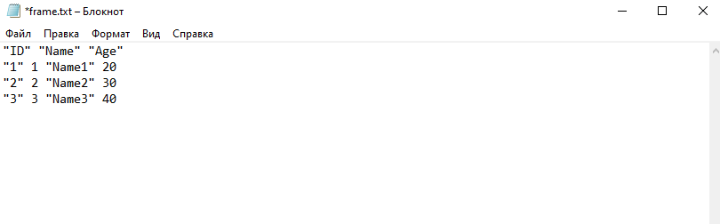
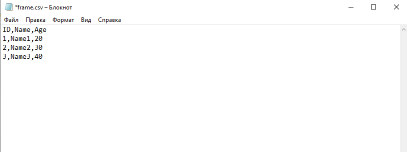

2 Часть 2 Загрузка данных
В предыдущей лекции мы изучили основные типы и структуры данных, теперь мы можем потихоньку переходит к работе с ними. Но для этого, в первую очередь, необходимо научиться загружать данные из внешних источников - таблиц xlsx, csv, txt и других форматов. До этого мы генерировали “эксперементальные” данные вручную, прям по мере выполнения кода, но в жизни такое будет редко - в основном, вся информация будет храниться в базах данных или табличных файлах.
2.1 Загрузка txt-файлов
Пожалуй, начнем с самого простого. Пусть наша таблица хранится в обычном файле-блокноте в формате txt. Для того, чтобы загрузить такой файл, нам не нужно подключать никакие дополнительные библиотеки - все необходимые функции для работы с такими файлами уже доступны “из коробки”.
Допустим, у нас есть txt-файл с таким содержимым:

Замечание. Обратите внимание на структуру Вашего файла - он должен содержать только одну правильно оформленную таблицу. В противном случае, могут возникать разного рода ошибки. Например, вот так делать не надо:

Итак, файл готов и правильно оформлен, давайте загрузим его в среду программирования с помощью команды read.table().
## 'data.frame': 6 obs. of 5 variables:
## $ V1: Factor w/ 6 levels "1","2","3","4",..: 6 1 2 3 4 5
## $ V2: Factor w/ 6 levels "Kolya","Petya",..: 3 5 2 1 6 4
## $ V3: Factor w/ 4 levels "C13","C14","Group",..: 3 4 1 4 2 1
## $ V4: Factor w/ 3 levels "F","M","Sex": 3 2 2 2 2 1
## $ V5: Factor w/ 4 levels "18","19","20",..: 4 1 1 3 2 2Обратите внимание - наша таблица загрузилась не совсем так, как нам хотелось бы:
- Названия столбцов загрузились как строка таблицы, а не как заголовки
- Все наши столбцы имеют тип
factor, что будет не очень удобно в дальнейшем
Чтобы избежать этих и многих других сложностей при загрузке, у функции read.table() есть большое количество аргументов. Подробнее со всеми ними Вы можете разобраться, почитав справку с помощью ?read.table:

Мы же рассмотрим только несколько аргументов, которые нас интересуют в данный момент - header (по умолчанию стоит FALSE) и stringAsFactors.
#Читаем таблицу. Говорим, что первая строка - заголовки. Также даем команду - символьные поля не надо переводить в factor.
df <- read.table(file = 'Lesson 2.txt', header = TRUE, stringsAsFactors = FALSE)
str(df)## 'data.frame': 5 obs. of 5 variables:
## $ ID : int 1 2 3 4 5
## $ Student: chr "Vasya" "Petya" "Kolya" "Zhenya" ...
## $ Group : chr "M15" "C13" "M15" "C14" ...
## $ Sex : chr "M" "M" "M" "M" ...
## $ Age : int 18 18 20 19 19Теперь мы видим, что вся таблица загружена правильно - присутствуют заголовки, а текстовые поля загрузились как character.
У read.table() есть еще большое количество полезных аргументов, которые Вы так или иначе будете использовать. Например, sep для установки знака-разделителя, dec для установки разделителя разряда в числах, skip для пропуска строк и много других. У них у всех есть значения по умолчанию, так что почитайте справку. Либо же придется набивать шишки на опыте :)
2.2 Загрузка csv-файлов
А что если наша таблица хранится в виде csv-файла? Не проблема - у нас также прям в базовом функционале есть функция для чтения csv-файлов: read.csv().
Она своими аргументами очень похожа на read.table(), поэтому сильно подробно останавливаться на этом не будем. При необходимости, открываем справку ?read.csv, а мы пока рассмотрим пример.
Пусть у нас есть такой csv-файл:

Давайте попробуем загрузить его с помощью read.csv():
## ID.Student.Group.Sex.Age
## 1 1;Vasya;M15;M;18
## 2 2;Petya;C13;M;18
## 3 3;Kolya;M15;M;20
## 4 4;Zhenya;C14;M;19
## 5 5;Sveta;C13;F;19Вы видите, что все наши данные загрузились в один столбик - т.е. у нас получилась не таблица, а один столбец. Почему так? Все просто - по умолчанию у функции read.csv() аргумент sep = ",". А в нашей таблице разделители - ";". Соответственно, указываем дополнительный аргумент sep при загрузке, а также добавляем stringAsFactors и все становится правильно:
## 'data.frame': 5 obs. of 5 variables:
## $ ID : int 1 2 3 4 5
## $ Student: chr "Vasya" "Petya" "Kolya" "Zhenya" ...
## $ Group : chr "M15" "C13" "M15" "C14" ...
## $ Sex : chr "M" "M" "M" "M" ...
## $ Age : int 18 18 20 19 19Теперь наша таблица загрузилась правильно - и заголовки есть, и все поля загрузились с правильным типом данных.
2.3 Загрузка xlsx-файлов
С файлами Microsoft Excel все чуть более интересно - таблицы xlsx формата встречаются очень часто, а вот функции для загрузки таких файлов в стандартном наборе нет. Но не проблема - достаточно подключить какую-ниубдь библиотеку и это решит все наши проблемы!
Лично мне нравится библиотека xlsx:
Далее все просто - теперь мы можем считывать наши xlsx-файлы с помощью функции read.xlsx(). Пусть у нас есть такой файл:

Загрузим его в рабочую среду с помощью функции read.xlsx().
## 'data.frame': 5 obs. of 5 variables:
## $ ID : num 1 2 3 4 5
## $ Student: chr "Vasya" "Petya" "Kolya" "Zhenya" ...
## $ Group : chr "M15" "C13" "M15" "C14" ...
## $ Sex : chr "M" "M" "M" "M" ...
## $ Age : num 18 18 20 19 19Здесь обязательных агрументов 2 - file и sheetIndex - порядковый номер листа в книге Excel. Также мы можем указывать дополнительные аргументы, например:
sheetName- вместо номера листа можем указать его имяrowIndex- номера строк, которые мы хотим загрузить с листаcolIndex- номера столбцов, которые мы хотим загрузить с листаheader- загружать ли заголовки?encoding- кодировка- многое другое, как специфичных аргументов функции
read.xlsx(), так и общих для всего семейства функцийread.какой-то формат()
Еще один вариант загрузки xslx-файлов в рабочую среду - использовать пакет readxl. Основное отличие функции read_excel() от read.xlsx() из пакета xlsx, который мы только что рассмотрели, - результат мы получаем не в виде фрейма, а в виде специального табличного формата - tibble. Сам по себе tibble - как бы более удобный вариант data frame, который был создан разработчиками языка R специально для удобства и функциональности обработки данных. Вокруг этого формата построено целое семейство пакетов для загрузки, очистки и обработки данных - пакеты tidyverse.
Загрузим нашу таблицу с помощью read_excel() из пакета readxl.
#Устанавливаем пакет xlsx
install.packages('readxl')
#Подключаем установленный пакет
library(readxl)## # A tibble: 5 x 5
## ID Student Group Sex Age
## <dbl> <chr> <chr> <chr> <dbl>
## 1 1 Vasya M15 M 18
## 2 2 Petya C13 M 18
## 3 3 Kolya M15 M 20
## 4 4 Zhenya C14 M 19
## 5 5 Sveta C13 F 19Обратите внимание, мы не указали никаких дополнительных аргументов, но все загрузилось правильно - и заголовки, и формат данных везде правильный. Именно под это и заточены функции из пакетов tidyverse - максимально облегчить жизнь аналитикам и исследователям.
2.4 Пакет readr
Пакет readr - специальная библиотека из семейства tidyverse для загрузки и сохранения данных. Позволяет считывать файлы с табличной структурой (например, csv-файлы) или файлы с произвольной структурой (например, чтение произвольных строк с записью в вектор), а также записывать результаты в файлы самых разных форматов с помощью функций write_формат().
Из особенностей этой библиотеки - например, она как бы “угадывает” тип данных в каждом столбце таблицы и выполняет преобразование, если нужно. Именно поэтому в предыдущем примере нам не пришлось указывать аргумент stringsAsFactors для корректной работы, ведь пакет readxl построен по тому же принципу!
2.5 Запись в файл
Ранее мы говорили с Вами о загрузке данных в систему, но что насчет выгрузки? Как сохранять результаты своей работы в виде таблиц или файлов разного формата?
Как и для загрузки, для этого существует большое количество функций из разных библиотек - некоторые идут в базовом наборе, некоторые нужно подключать с отдельными пакетами, некоторые включены в пакет readr. Учитывая, что логика записи такая же, как у чтения, давайте просто рассмотрим несколько примеров.
Для начала, сгенерируем фрейм, который будем записывать:
## ID Name Age
## 1 1 Name1 20
## 2 2 Name2 30
## 3 3 Name3 40Теперь запишем cозданный фрейм в разные форматы: txt, csv и xlsx, - и посмотрим, что получилось.



Как Вы видите, ничего сложного нет. В общем случае достаточно указать просто что мы записываем и куда мы записываем. Естественно, есть и множество дополнительных аргументов - номера и названия листов (в случае книг Excel), именование строк и столбцов, кодировки, режим добавления строк/перезаписи и многое другое! Подробней ознакомиться с каждой функцией с помощью справки и на официальных сайтах каждой библиотеки (если такие имеются).
2.6 Как быть с другими форматами?
У Вас может возникнуть резонный вопрос - а как быть с другими форматами данных? Не всегда же информация хранится в таблицах - бывают различные SPSS и SAS - файлы, json, XML, HTML, базы данных и разные другие форматы. Общая рекомендация такая - используем специальные библиотеки. Практически на все самые популярные форматы и источники есть какие-то пакеты и обертки, позволяющие достаточно просто и удобно работать с этими источниками. Например:
- пакет
havenдля SPSS, Stata и SAS файлов - пакет
jsonliteдля json xml2для XMLrvestдля HTML
Само собой, все исходит от Вашей задачи и библиотеку нужно подбирать под Ваши конкретные потребности. Все придет с опытом :)
2.7 Полезные добавления
Хотелось бы обратить Ваше внимание еще на несколько полезных вещей, которые напрямую с нашей темой не связаны, но определенные проблемы и вопросы могут вызывать.
2.7.1 Работа с директориями
Во всех функциях при загрузке-выгрузке данных мы указываем путь к файлу. Однако, во всех примерах мы предполагали, что наши файлы лежат в рабочей папке. И тут возникают два вопроса:
- Как узнать, какая папка рабочая?
- Как поменять рабочую папку?
Естественно, Вы можете каждый раз до каждого файла прописывать полный путь, например, “C:1Course.txt”. Однако, сами понимаете, это не особо удобно. Если у нас все рабочие файлы лежат плюс-минус в одной папке, почему бы просто не сделать ее рабочей?
Итак, отвечаем на первый вопрос: чтобы узнать, какая директория у нас рабочая, нужно использовать команду getwd():
## [1] "C:/Users/Андрон/Desktop/R Course"Отвечаем на второй вопрос: чтобы поменять рабочую директорию, достаточно использовать команду setwd() с указанием пути до желаемой рабочей директории.
## [1] "C:/Users/Андрон/Desktop"Или так:
## [1] "C:/Users/Андрон/Desktop"Конструкция "../" значит, что мы выходим из текущей папки на один уровень вверх. Так мы можем делать, если нам известна структура наших папок. Я знаю, что папка R Course, в которой лежит мой проект, находится в папке Desktop. Соответственно, я просто поднимаюсь на один уровень выше, и теперь моя рабочая папка - Desktop.
Зная эти две команды, Вы сможете гибко настраивать рабочие директории. По такому же принципу Вы можете прописывать и пути в функциях загрузки/сохранения. Например, чтобы сохранить наш фрейм не в рабочую папку, а в Desktop, мне надо прописать:
Мы изменили путь к файлу frame.xlsx и теперь он появится не в рабочей директории, а в нужной папке.
2.7.2 Выбор файла вручную
А что, если Вам нужно реализовать какую-то программу, которая будет загружать файл не по названию, а после того, как Вы его выбрали? Не проблема! Для этого существует специальная функция choose.files(). Работает она очень просто:
После чего перед Вами появляется стандартное окошко выбора файлов:

Таким образом, Вы сможете выбирать все нужные Вам файлы вручную. Такая функция может потребоваться, например, при разработке каких-то аналитических приложений.
2.8 Заключение
Мы рассмотрели весь основной функционал загрузки и сохранения данных с помощью функций R и различных пакетов достаточно подробно. Теперь мы можем переходить на следующую стадию - обработка данных.